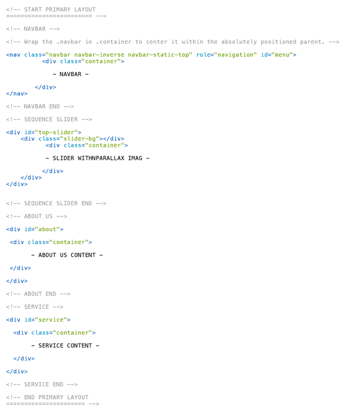

Created: 04/27/2014
By: Fabian Bentz
Email: info@fabianbentz.de
Thank you for downloading my theme.
This theme is a responsive layout with 12 columns build on Bootstrap 3. All of the informations are nested within a div with an specific id. The general template structure is the same throughout the template. Here is the general structure.
If you would like to edit the background, font, or style of any elements in one of these columns, you would do the following:
#about {
background-color: #someColor;
...
}
If you find that your new style is not overriding, it is most likely because of a specificity problem. Scroll down in your CSS file and make sure that there isn't a similar style that has more weight.
So, to ensure that your new styles are applied, make sure that they carry enough "weight" and that there isn't a style lower in the CSS file that is being applied after yours.
I'm using 7 custom CSS files in this theme. The first one is the "custom.css" file. This file also contains some general styling. Every of the 6 Color Styles uses a specific CSS file. This Files contains anchor tag colors, font-colors, etc. Keep in mind, that these values might be overridden somewhere else in the file.
All files are separated into sections using:
1. NAVBAR
- some Code -
2. ABOUT US
- some Code -
3. SERVICE
- some Code -
4. PORTFOLIO
- some Code -
5. TEAM
- some Code -
6. PRICE TABLES
- some Code -
etc, etc.
If you would like to edit a specific section of the site, simply find the appropriate label in the CSS file, and then scroll down until you find the appropriate style that needs to be edited.
The other 6 CSS Files included in this Template are necessary files from Bootstrap/Sequence Slider/Magnific Popup/etc. .
This theme imports 13 Javascript files.
$('.overlay').hover(
function(){
$(this).find('.caption').fadeIn(550);
},
function(){
$(this).find('.caption').fadeOut(550);
}
);
$(function(){
$('#Grid').mixitup({
targetSelector: '.mix',
filterSelector: '.filter',
effects: ['fade','blur'],
easing: 'smooth',
});
});
I've used the following plugins, images, icons or other files as listed.
I'm use 1 custom PHP file (contact.php) in this theme for the Contact Form. You only have to add your Mail Adress and your Subject.
// Get the Values from the Contact form $EmailFrom = "Website Contact Form"; $EmailTo = "YOUR MAIL ADRESS"; // insert your email address here $Subject = "YOUR SUBJECT HERE"; // insert your Subject here $name = Trim(stripslashes($_POST['name'])); $email = Trim(stripslashes($_POST['email'])); $phone = Trim(stripslashes($_POST['phone'])); $message = Trim(stripslashes($_POST['message']));
Once again, thank you so much for downloading this theme.
Fabian Bentz